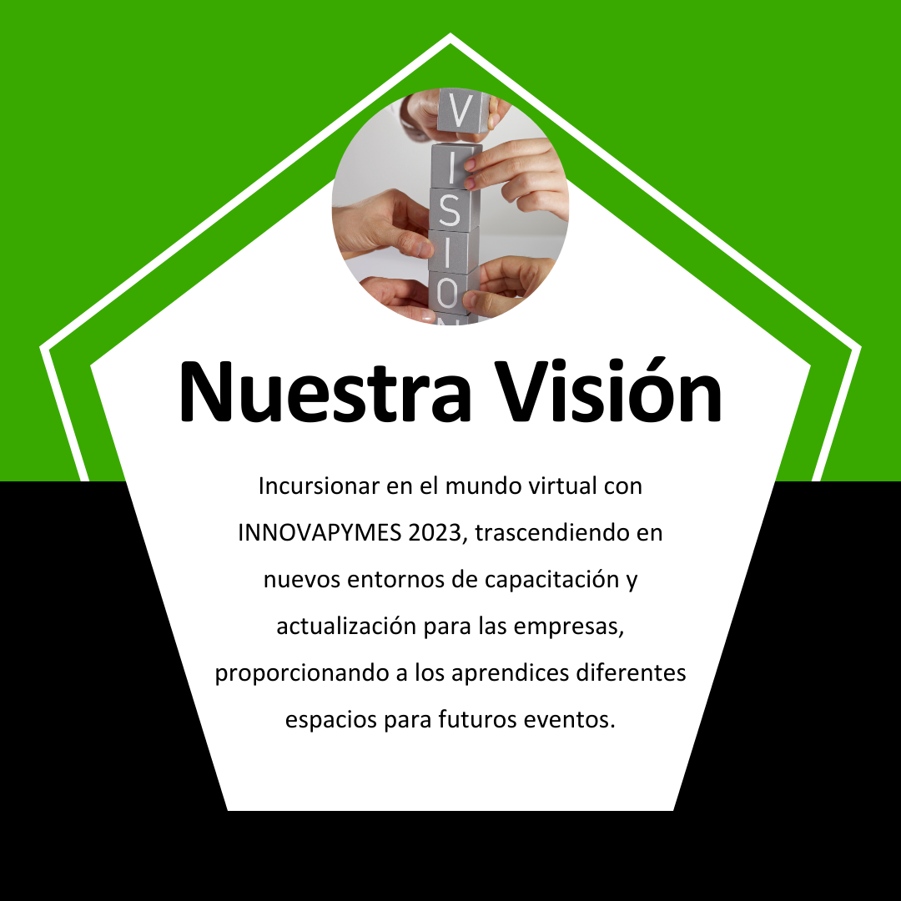
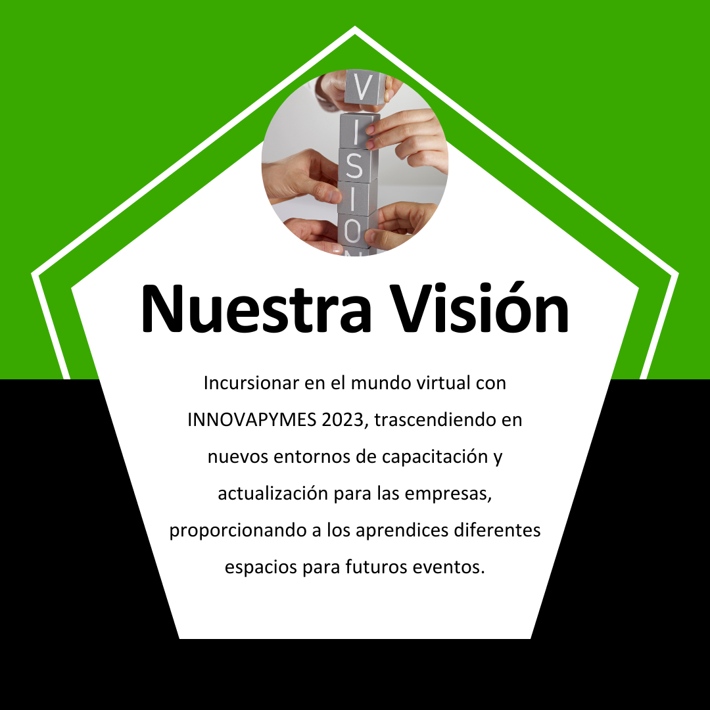
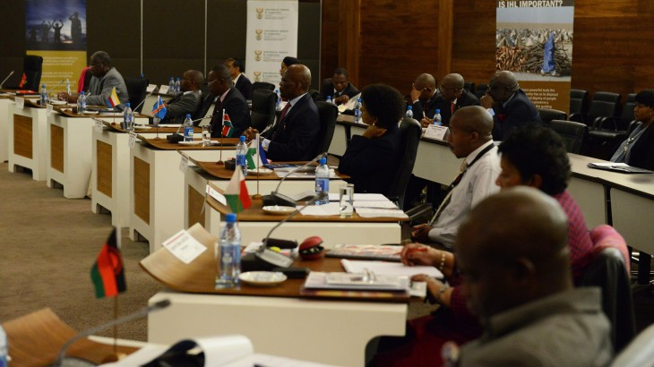

¿Qué es Innovapymes SENA 2023?
Innovapymes SENA 2023 es un evento único y disruptivo organizado por el Servicio Nacional de Aprendizaje (SENA) con el objetivo de capacitar a los participantes de las empresas vinculadas al SENA en temas cruciales para el crecimiento y la innovación empresarial. Este evento brinda una oportunidad excepcional para su empresa de ser parte activa de esta experiencia de aprendizaje y desarrollo.
Durante el evento, los participantes tendrán la oportunidad de acceder a valiosos conocimientos y herramientas relacionados con Marketing Digital, Innovación Empresarial y Mejora de la Rentabilidad, impartidos por destacados ponentes nacionales e internacionales en cada uno de estos ejes temáticos.
Misión y Visión
En un mundo empresarial en constante evolución, reconocemos la importancia de mantenernos a la vanguardia en temas cruciales como el Marketing Digital, la Innovación Empresarial y la Mejora de la Rentabilidad. Por esta razón, hemos reunido a destacados ponentes nacionales e internacionales, quienes compartirán sus conocimientos y experiencias para ayudarte a enfrentar los desafíos actuales y futuros.
Te invitamos a ser parte activa de esta experiencia de aprendizaje y desarrollo. Juntos, forjaremos un camino hacia la excelencia empresarial y contribuiremos al desarrollo económico y social de nuestro país.
Sin más preámbulos, te presentamos nuestra Misión y Visión, pilares fundamentales que guían nuestra labor y compromiso con el crecimiento sostenible de las empresas y la sociedad en general.
 

Conócenos - Ponentes
Juan Fernando Correa
Profesional en Negocios Internacionales con amplia experiencia docente y en el campo profesional, presentará una ponencia inspiradora sobre Innovación Empresarial. Con una Maestría en Administración y otra en Finanzas en proceso, y candidato a Doctorado en Administración Gerencial, cuenta con una sólida formación académica. Su experiencia como Vicerrector de Investigación y Extensión Académica en el ITM y su participación en proyectos de investigación respaldan su conocimiento en el tema. Como ponente, compartirá estrategias y enfoques para fomentar la innovación y el crecimiento empresarial.
Wilman Cuellar
Conferencista y coach especializado en ventas, PNL, coaching y marketing digital, presentará una ponencia inspiradora sobre estrategias efectivas de Marketing Digital. Con amplia formación en liderazgo, inteligencia emocional y Social Media, compartirá su conocimiento y experiencia en la creación de modelos de estrategias innovadoras para potenciar el éxito en el entorno digital. Su enfoque motivador y su experiencia como autor de libros de éxito lo convierten en un experto ponente capaz de guiar a los asistentes hacia un crecimiento personal y profesional significativo en el mundo del Marketing Digital.

Fabio Aldemar Obando
Dará la ponencia de Rentabilidad Empresarial.
Equipo de Trabajo - Comités
Comité de Comunicaciones
El Comité de Comunicaciones se encarga de gestionar la difusión de información relevante sobre el evento tanto interna como externamente. Su objetivo es mantener informados a todos los involucrados y al público en general sobre las actividades y logros de Innovapymes SENA 2023.
Líder del Comité: Nombre del líder
Comité de Mercadeo
El Comité de Mercadeo se enfoca en la promoción del evento y en atraer a más participantes y patrocinadores. Sus estrategias buscan asegurar una mayor visibilidad de Innovapymes SENA 2023 y maximizar el impacto del evento en la comunidad empresarial.
Líder del Comité: Nombre del líder
Comité Documental
El Comité Documental se encarga de registrar y archivar cada etapa y detalle del evento. Su labor es fundamental para asegurar un registro completo y ordenado de las actividades de Innovapymes SENA 2023, lo que facilitará futuros análisis y mejoras.
Líder del Comité: Nombre del líder
Comité Organizacional
El Comité Organizacional es el encargado de planificar y coordinar todos los aspectos logísticos del evento. Desde la selección del lugar hasta la programación, el Comité Organizacional asegura que cada detalle esté cuidado para que Innovapymes SENA 2023 sea un éxito.
Líder del Comité: Nombre del líder
Comité de Logística
El Comité de Logística se encarga de garantizar que los recursos y materiales necesarios para el desarrollo del evento estén disponibles y en óptimas condiciones. Su labor incluye la gestión de equipos, transporte y otros elementos clave para el funcionamiento de Innovapymes SENA 2023.
Líder del Comité: Nombre del líder
Contacto
Si deseas obtener más información sobre Innovapymes SENA 2023, participar como patrocinador o realizar alguna consulta, no dudes en contactarnos. Estamos disponibles para responder tus preguntas y brindarte toda la asesoría que necesites.
Puedes comunicarte con nosotros a través del siguiente correo electrónico: info@innovapymes.com o mediante nuestro número de teléfono: +123456789.
¡Esperamos contar contigo en Innovapymes SENA 2023!
Programa
A continuación, te presentamos el programa preliminar de Innovapymes SENA 2023. Ten en cuenta que este programa puede estar sujeto a cambios y actualizaciones. Te invitamos a mantenerte informado a través de nuestras redes sociales para recibir las últimas novedades del evento.
| Día | Hora | Actividad |
|---|---|---|
| Lunes | 9:00 - 10:30 | Sesión de Apertura |
| Lunes | 11:00 - 13:00 | Eje Temático 1: Marketing Digital |
| Martes | 9:00 - 10:30 | Eje Temático 2: Innovación Empresarial |
| Martes | 11:00 - 13:00 | Eje Temático 3: Mejora de la Rentabilidad |
| Miércoles | 9:00 - 10:30 | Talleres Prácticos |
| Miércoles | 11:00 - 12:30 | Clausura y Entrega de Certificados |